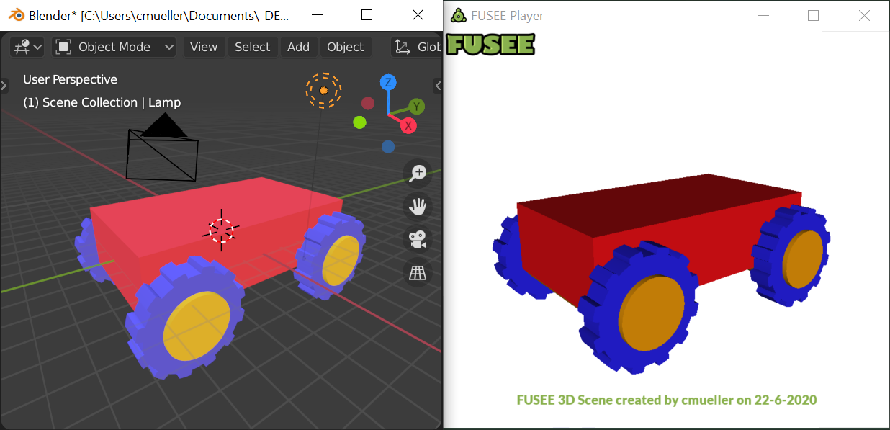

Tutorial 1 Assets
Tutorial Programm
Requirement: FUSEE export add-on for Blender
Hierarchies in FUSEE scene graph format (consisting of nodes and components)
can be saved and loaded as .fus files. To save 3D models created with Blender as .fus files, the FUSEE Export AddOn for Blender must be installed.
If Blender has been installed at the default location, the command fusee install --blender creates the Blender-Add-On at that location. It then has to be in the list in Blender under Preferences -> Add-Ons
the add-on should be in Testing and is activated with a tick.
Features of the FUSEE exporter
With the FUSEE Export AddOn for Blender, some features that are possible in Blender can be exported as FUSEE content. What exactly these are is described in the FUSEE Wiki - here is a short summary:
- Parent-child relationships of Blender objects as hierarchies of
SceneNodeinstances. - The names of the Blender objects as the
Nameproperty of the respectiveSceneNodeobject - 3D geometries as
mesh- corner positions (
vertices) - Normals (
Normals) depending on the" Smooth / Flat "setting - Texture coordinates (
UVs) - Areas divided into triangles (
Triangles)
- corner positions (
- Position, rotation and scaling relative to the parent settings and
to the coordinate origin (pivot point) as
Transform - Colors from the Blender material settings for Principled BSDF or Diffuse BSDF Nodes
Models as assets
Content that was not created by programming is usually called Assets in 3D real-time environments (game engines). In a FUSEE application, assets in the form of Blender 3D scenes exported as .fus files can be integrated as follows.
- Creates a scene in Blender
- Exports the scene as a .fus file
- Copy the .fus file into the "Assets" subfolder of your FUSEE project
Assets added in this way can then be accessed in a FUSEE application using the method AssetStorage.Get<>(). The method must be written in angle brackets (<>), the type and the name must be passed in the method parameter list (()).
In our case, a .fus file always contains an object of the type SceneContainer.
The name of the asset corresponds to the file name (WITH file name extension).
- Replaces the call in the
Initmethod
_scene = CreateScene ();
through
_scene = AssetStorage.Get <SceneContainer> ("CubeCar.fus");
If necessary, replace the name "CubeCar.fus" with the name of your own file.
- Since
CreateScene ()is no longer called,_baseTransformis not called either more initialized. Comment on the line for now
// _baseTransform.Rotation = new float3 (0, M.MinAngle (TimeSinceStart), 0);
simply from (prefix //).
The scene now consists of the content of the .fus file created in Blender.

To better understand how the FUSEE Export AddOn for Blender creates the scene, let's look at the contents of the .fus file after loading it in the application.
👨🔧 TODO
- Sets a breakpoint BEHIND the line in which the model is loaded.
C # _scene = AssetStorage.Get <SceneContainer> ("CubeCar.fus");

Here can you see the hierarchies of Fusee and Blender. As you can see they are the same.
In order to change our object interactively, e.g. colors, positions, rotations, we want to be able to access individual components.
Since we no longer create the scene in the code itself, we have to define the components to which the we want to access. We can do that by take advantage of the hierarchy, for example, access the third grandchildren object in the first child of the fifth Object in the scene.
However, it is easier to identify the objects by their names and after loading them The scene simply looks for the components in the objects whose names we know.
Change position / rotation / orientation
For example, to find transform component of the right rear wheel in the above example scene, it can be searched for in the scene using the following call and saved in the _rightRearTransform field:
C # private Transform _rightRearTransform; ... _rightRearTransform = _scene.Children.FindNodes (node => node.Name == "RightRearWheel") ?. FirstOrDefault () ?. GetTransform ();
The statement put together in one line says something like:
- Comb through the hierarchy of all objects in the scene (
_scene.Children.FindNodes). - Search for nodes whose name is "RightRearWheel" (
node => node.Name ==" RightRearWheel ") - Of the nodes found in this way, take the first one, if one exists (
.FirstOrDefault ()). - Deliver the transform component contained there (
.GetTransform ())
The strange-looking "? . "operators are called Elvis-Operator. And mean
that only the object returned in the preceding call should be accessed,
if one actually exists, otherwise null should be returned.
So if no object was found, that has the name you are looking for OR an object was found but doesn't have a transform component, the entire call results in _rightRearTransform being assigned the value null
and not in a crash because an attempt was made to look for a
Transform component.
Change colors
If a material has been assigned to an object in Blender, it has a SurfaceEffect component when it is exported via the FUS exporter when imported into FUSEE. These can be used to change the coloring parameters such as the diffuse color:
private SurfaceEffect _rightRearEffect;
...
_rightRearEffect = _scene.Children.FindNodes (node => node.Name == "RightRearWheel") ?. FirstOrDefault () ?. GetComponent <SurfaceEffect> ();
_rightRearEffect.SurfaceInput.Albedo = (float4) ColorUint.OrangeRed;